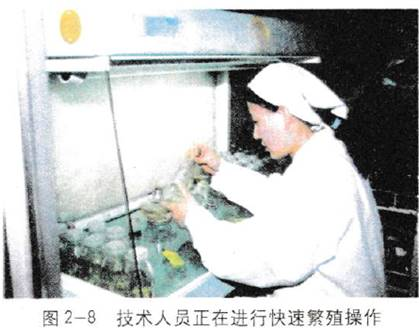
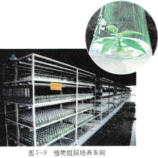
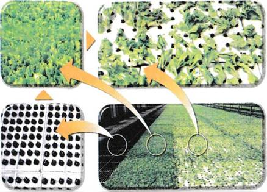
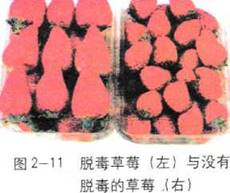
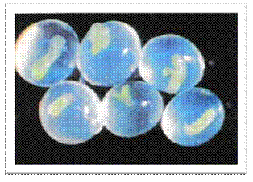

2.2植物细胞工程的实际应用
随着生物科技的进步，生活中处处可以发现生物技术的踪影。植物细胞工程作为一门新兴的生物技术，已经普遍应用于社会生产的方方面面。
植物繁殖的新途径
微型繁殖
植物组织培养技术不仅可以保持优良品种的遗传特性，还可以高效快速地实现种苗的大量繁殖，因此人们形象地把用于快速繁殖优良品种的植物组织培养技术，叫做植物的微型繁殖技术，也叫快速繁殖技术 (图 2-8)。

目前，一些优良的观赏植物、经济林木、无性繁殖作物等都已经实现了利用快速繁殖技术来提供苗木。兰花、生菜、杨树以及无子西瓜的试管苗，都已形成一定规模的产业化生产（图2-9、2 - 10)。早在20 世纪60年代，荷兰的科学家就成功地实现了利用组织培养技术来培育兰花。目前，荷兰的兰花生产已经发展成为举世闻名的兰花工业，每年为荷兰创造了巨额的外汇收入。

讨论
人们利用植物的微型繁殖技术来进行工厂化育苗生产，这是利用了该项技术的哪些特点？
作物脱毒
马铃薯和草莓都是无性繁殖的作物，它们感染的病毒很容易传播给后代。病毒在作物体内逐年积累，就会导致作物产量降低，品质变差。早在20世纪50年代，科学家们就发现植物分生区附近（如茎尖）的病毒极少，甚至无病毒。因此，切取一定大小的茎尖进行组织培养，再生的植株就有可能不带病毒，从而获得脱毒苗。用脱毒苗进行繁殖，种植的作物就不会或极少感染病毒。
目前采用茎尖组织培养技术来脱除病毒，在马铃薯、草莓（图2- 11)、甘蔗、菠萝和香蕉等主要经济作物上已获得成功。人们用组织培养技术脱毒培育出的马铃薯，要比未经脱毒的增产约50%以上。

神奇的人工种子
农业、林业生产离不开种子，但不少树木需要生长数年后才能结出种子；一些作物优良杂种的后代也会因发生性状分离而丧失其优良特性。另外，常规种子的生产还会受到季节、气候和地域的限制，并且需要占用大量的土地来实现制种。所以人们就产生了这样的想法，是否可以找出一种天然种子的替代品，来克服这些缺陷呢？
科学家们经过大量的研究，终于在20世纪80年代，利用植物的组织培养技术制造出了神奇的人工种子。所谓人工种子，就是以植物组织培养得到的胚状体、不定芽、顶芽和腋芽等为材料，经过人工薄膜包装得到的种子（图2 －12)。人工种子在适宜条件下同样能够萌发长成幼苗。

图2-12人工种子
小知识
胚状体
胚状体是指在组织培养过程中， 在植物组织块或愈伤组织上产生的一种结构，它与正常受精卵发育形成的胚有类似的结构和发育过程。其不同的发育阶段，也可以用正常胚发育中各个时期的术语来描述，如原胚、球形胚、心形胚、鱼雷形胚等。